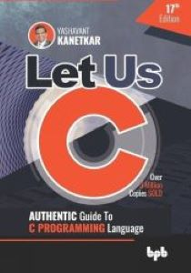
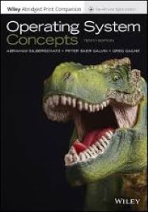
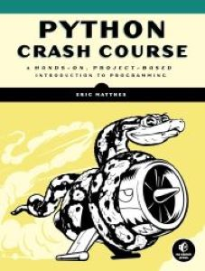

Let Us C
Author: Yashavant Kanetkar
Year of Publish: 2002
SUMMARY
"Let Us C" by Yashavant Kanetkar is a highly regarded introductory book on the C programming language. It offers a structured approach to learning, starting from basic concepts like data types and control structures, and progressing to more advanced topics such as functions, arrays, pointers, and file handling. Kanetkar's writing style is clear and instructional, making complex ideas understandable for beginners. The book is enriched with numerous examples and exercises that allow readers to practice and reinforce their understanding of each topic. This hands-on approach helps in developing programming skills effectively. However, "Let Us C" primarily covers traditional C standards and may not include the latest features or practices of the language. Despite this limitation, it remains a popular choice among students and educators due to its comprehensive coverage, practical orientation, and emphasis on foundational concepts. Overall, "Let Us C" serves as a valuable resource for anyone starting their journey in programming with C, providing a solid foundation and practical skills necessary for further exploration in the field.
REVIEW
"Let Us C" by Yashavant Kanetkar is a comprehensive introduction to the C programming language, ideal for beginners. The book carefully explains fundamental concepts with clear examples and exercises, making it accessible even to readers with no prior programming experience. Kanetkar's writing style is engaging and instructional, guiding readers through topics like data types, control structures, functions, and pointers. However, the book's focus on older C standards might not cover some modern practices or advancements in the language. Overall, "Let Us C" remains a popular choice for learning C due to its structured approach and practical orientation.
Operating System Concepts
Author: Abraham Silberschatz
Year of Publish: 1998
SUMMARY
"Operating System Concepts" by Abraham Silberschatz is a seminal textbook that explores the fundamental principles of operating systems. It covers a wide range of topics essential for understanding how modern computer systems manage resources and execute tasks efficiently. The book starts by introducing basic concepts such as processes, threads, and CPU scheduling, then delves into memory management, file systems, and I/O systems. Silberschatz and his co-authors present these concepts with clarity and depth, providing real-world examples and case studies to illustrate their practical applications. The text also discusses important issues like security, distributed systems, and virtualization, reflecting the evolving landscape of operating systems. Although "Operating System Concepts" is rigorous in its coverage, it remains accessible to both students and professionals in the field. Its comprehensive approach and authoritative content make it a valuable resource for anyone seeking a solid understanding of operating systems theory and practice.
REVIEW
"Operating System Concepts" by Abraham Silberschatz is a comprehensive textbook that provides a thorough introduction to the principles of operating systems. It covers essential topics such as processes, memory management, file systems, and security, with clarity and depth. The book balances theoretical concepts with practical applications through case studies and examples, making it suitable for both students and professionals. However, it assumes a basic understanding of computer architecture and programming. Overall, "Operating System Concepts" is highly recommended for anyone looking to gain a solid foundation in operating systems theory and practice, offering valuable insights into the complexities of modern computing environments.
Python Crash Course
Author: Eric Matthes
Date of Publish: 2019
SUMMARY
"Python Crash Course" by Eric Matthes is a hands-on guide designed for beginners to quickly grasp the fundamentals of Python programming. The book is divided into two parts: the first covers basic programming concepts such as variables, lists, loops, and functions, while the second delves into more advanced topics like web development, data visualization, and game development using Python libraries such as Django and Pygame. Matthes' approach is practical and engaging, with clear explanations and numerous exercises and projects that reinforce learning. Each chapter builds upon the previous one, gradually increasing in complexity while ensuring comprehension. The author's emphasis on project-based learning encourages readers to apply their knowledge to real-world scenarios, promoting both understanding and confidence in programming. Overall, "Python Crash Course" is highly recommended for beginners seeking a structured and hands-on introduction to Python, offering a solid foundation for further exploration and application in various domains of programming.
REVIEW
"Python Crash Course" by Eric Matthes is an excellent resource for beginners learning Python. The book combines clear explanations with practical exercises and projects, guiding readers through fundamental concepts and gradually introducing more advanced topics. Matthes' approach encourages hands-on learning and application, making it accessible and engaging for new programmers. The inclusion of real-world projects like creating web applications and games helps reinforce understanding and build confidence. However, some readers may find the pace brisk in parts, especially if they are completely new to programming. Overall, "Python Crash Course" is highly recommended for its structured approach and effective teaching methods.